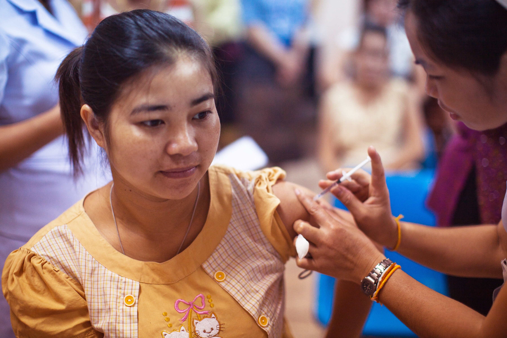

Colombia registra 2.448 contagios y 86 muertos por covid-19

La COVID-19 es la enfermedad causada por el nuevo coronavirus conocido como SARS-CoV-2. La OMS tuvo noticia por primera vez de la existencia de este nuevo virus el 31 de diciembre de 2019, al ser informada de un grupo de casos de «neumonía vírica» que se habían declarado en Wuhan (República Popular China)
Ministro de Salud dice que vacunación de los adolescentes de 12 a 14 años depende de los resultados de los estudios a nivel mundial
El ministro de Salud, Fernando Ruiz, confirmó que Colombia en muy pocos días podrá tener abierto todo el Plan Nacional de Vacunación contra la covid-19, al señalar que solo hace falta el grupo de 12 a 14 años de edad.
Destacó que paulatinamente se siguen abriendo las diferentes etapas las cuales dependen de la cantidad de vacunas que están llegando al país y la distribución que se realice en Colombia.
“Solo nos quedaría por abrir el grupo de 12 a 14 años que estaremos realizando los días subsiguientes”, indicó.
¿Qué es y para qué sirve la insulina?
Insulina humana es una clase de medicamentos llamados hormonas. Insulina humana se usa para tomar el lugar de la insulina que normalmente produce el cuerpo. Funciona ayudando a mover el azúcar de la sangre hacia los otros tejidos del cuerpo en donde se usa para energía. También evita que el hígado produzca más azúcar